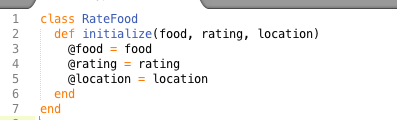
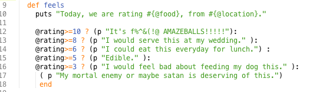
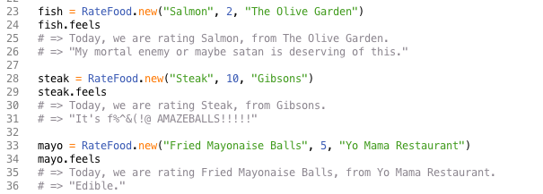

Class Bass: Technical- Week 5
August 17, 2014
Ruby classes are a powerful tool which allow us the ability to define a set of objects using the same variables. We can then use these variables that are nested within the object definition to run requests, methods, etc. I find, as an abstract random thinker, that the best way to learn is through example so lets dive in.

Initialize is a ruby method that allows for the .new method in ruby to create a new instance of the class we are working in. Here I am creating a food item with a name, rating and location. The @ in front of our variables makes them instance variables. We can now call on them from anywhere within the class. As we can see below, I am able to call any of the variables in the "feels" method without having to redefine them inside of the method.

With the class we have just defined we are official food critics that can live tweet a quick review with just a few submitted variables.

Cultural- Week 5
August 17, 2014
I thoroughly enjoy pairing. Bouncing ideas off another person is incredibly valuable, as is going through the occasional frustration that comes up when you are coding. It eases the blow knowing someone is there with you. It also helps as a rubric, after a pair I have a better idea of where I am technically relative to the rest of the cohort which can either give me confidence or light a fire under me. All in all I feel it is a great way to grow, I would honestly wish we did it more if I wasn't working 60 hour weeks :P
My feedback has given me mixed emotions; all in all I would say it has made me feel good. I've had multiple people give me feed feedback and have only received one piece that I would consider negative. That one piece of negative feedback seems to have cut deeper than all the positive unfortunately so while I know that based on the numbers I should feel good it sort of feels like a hollow victory. Regardless I do appreciate the honestly and now know how to be a better partner. Writing feedback is fun though I don't feel my feedback is incredibly valuable. I tend to be quite tame in my reviews which likely is a good confidence boost for the receiver but may not send a message that they could learn from.
Technical- Week 4
August 10, 2014
#DBCAvH
Hashes and arrays have proven to be crucial tools towards our ruby work so far.
Arrays are used to carry a list of data. Of this this we can scroll through it to find something, we can add and delete as we see fit, we can edit every item in it and replace it to use it for something else or we can just capitalize everything in it.
Arrays allow us to maintain a set of data and through methods and different logic we can manipulate that data to do anything we need.
Hashes are like two groups of friends met at a party and every one of them married someone from the other group. Hashes are like two arrays got smushed together and became buddies. What purpose does that serve? Now that two array's, buddies, lovers are linked we can find out anything about one lover from the other. In hashes the Key is called the friend in group one and the Value is the friend in group two. The Key & Value relationship allows us to look up one thing(Key) and return its value. We can use this to store data i.e. lookup key 'Tim' return his grade 'F'. Or we can use this to translate data as we did in our cipher project.
Cultural- Week 4
August 10, 2014
One of the biggest issues in the tech industry today is the lack of diversity in the workforce.
Google's self published data states that only 30% of its staff is women. It's U.S. staff breaks down to 30% Asian, 4% other, 3% Hispanic 2% African-American leaving the other 61% as white.
This lack of diversity is seen at all levels in tech companies as well. At Yahoo! Whites make up only 50% of the work force while still magically accounting for 78% of U.S. leadership.
The easiest solution to these problems is major tax breaks for properly diversified companies. Those are already in place, though perhaps not as lucrative as they could be, and still do not remedy the situation. It is also hard for politicians to continue justifying tax breaks for tech companies as they already get so many and . Another solution is heavy funding and scholorships for more diverse students getting computer science degrees. As of now only 18% of CS degrees go to women and only 10% to African-Americans. This leads to very limited talent pools from which major tech firms can acquire personnel.
Sources:
Tech companies diversity problems are even worse at the leadership level
Can Schools Solve The Tech Industry's Pipeline Problem?
Technical- Week 3
July 30, 2014
Some of the main reasons javascript is so popular are speed, libraries, and that every browser supports it. Javascripts speed is a result of validations being executed on the client side before being sent to the server to process. This decreases load on servers. Javascript also has the most online resources of any other coding language. Sources like stack overflow and W3Schools allow for anyone to pick up javascript in a short amount of time. Finally, that it is embedded in all browsers makes it the most universal of languages.
Javascript also has some downsides. It can't access databases which seriously limits its usage towards application development. It also doesn't protect your page source or images. Since all webpages created through javascript are pushed to the client side, event element on your webpage is accessible to them. That javascript runs on all browsers is a blessing and a curse. If a browser interprets javascript differently than intended it can lead to hiccups on your site. This leads to extensive testing across many platforms to ensure your javascript site turns out pretty everywhere.
Cultural- Week 3
July 30, 2014
According to the research, as an abstract random thinker I am very emotional and people oriented. I hope to use this to my advantage throughout DBC as we are told that the programming community is as much about personal relationships as it is writing code. Hopefully I can use my thinking style to manage some good working relationships and accomplish something great.
I've had a few struggles with my time in Phase 0. While the largest has easily been the lack of time allowed for the work due to other events in my life, there has also been some struggle with picking up the material. A lot of the material has been presented in just article form which is probably useful for many but as someone that learns better with my hands on the keys it hasn't been great so far.
I will have to adapt to get everything I can out of Phase 0 so I can hit the ground running when I get to Phase 1. I am sure by forcing myself to take a little quiz after reading every article I will start absorbing the material better.
Technical- Week 2
July 27, 2014
Margins v Boarders v Padding can be a tricky concept to master. From the inside out the order is Content > Padding > Border > Margin. The content is the text/image we are modifying or moving, it is the element we are trying to manipulate.
The space between the content and the border is the padding. If you want the text of an object to appear on the bottom side of something so you can put an image on the top side you would make that move using padding commands.
The border is mostly aesthetic, it is like the frame of a picture. It is there for good looks. I do find it is easiest to identify your elements when you put a border around them, so I typically will start something with a black border and then remove them before posting or pretty them up.
The margin is the distance between the element you are trying to manipulate and other objects. Whether it be other elements or the border of the page. The margin allows you to change the distance between things.

Cultural- Week 1
July 20, 2014

DBC seems like it will be a very eye opening experience. I am excited to meet new people and to adapt
to each others learning styles. I anticipate an enlightening experience. Anytime in my career where people from
different backgrounds have collaborated on a project the results have been great. The thought of an entire course
dedicated towards doing that seems like a good opportunity to grow/absorb.
That said I am also slightly nervous. There are times where in a group environment stubborn people very much
ruin the fun or flat out decrease efficiency of a group. Pairing with these people may lead to some sub optimal situations.
But perhaps it is the job of each student to adapt to their peers.
Technical- Week 1
July 20, 2014
Quora is an amazing source for knowledge on many aspects of life. It brings together a wide array of seemingly above average intelligence into one place. Topics are proposed and discussed and debated in great length. I have seen it compared to reddit but without the random memes and pointless, though sometimes entertaining, content. This can partly be attributed to having to register with your real name rather than a pseudoname. Visually the site is very clean or plain. Just a search bar and a main panel of scrolling topics. Quora has become an great place for me to be entertained while not feeling like I have wasted time. I always feel like I am learning on this site. The plain layout allows for ease of use for hours without feeling worn out.

Pando daily is a leading source for breaking tech news. It serves the same purpose as techcrunch & recode but I feel its writers are a bit more analytical than the others. The site is fairly attractive using large, caricaturesk illustrations to draw readers into clicking links. They recently went through a website re-design which has left some unattractive white space along the margins but all in all the site is clean and pleasing. The site is easy to browse and content is only updated when there is something to write about as opposed to other news sites which can just churn out frivilous articles to keep people coming back.

Reuters is a strong source for hard business and world news. It reports quickly and updates often on any type of disaster or unfolding stories. Though the site is a bit cluttered it has fewer advertisements than many other news sites and it has a easy enough navigation bar. I have seen their videos start with long ads which can be off putting. Though cluttered is has a clean, contrasted look. It uses provacative images to grab attention. It also has a stock ticker function which can be customised to follow your stocks, an appealing feature for some.